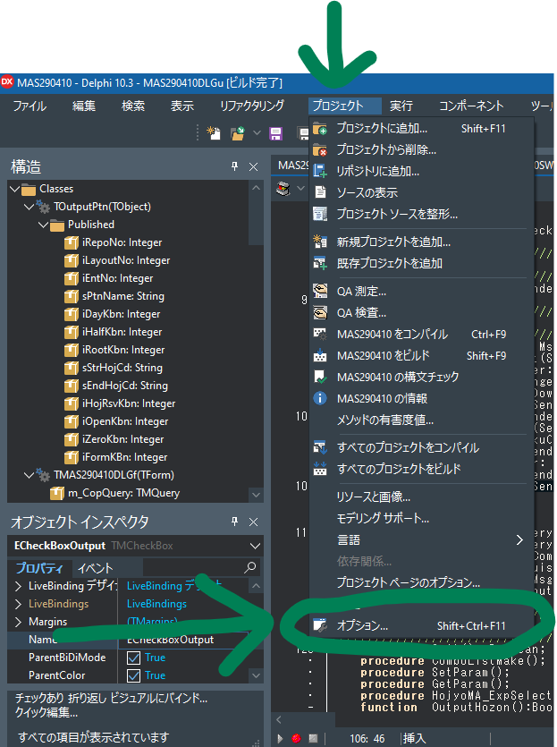
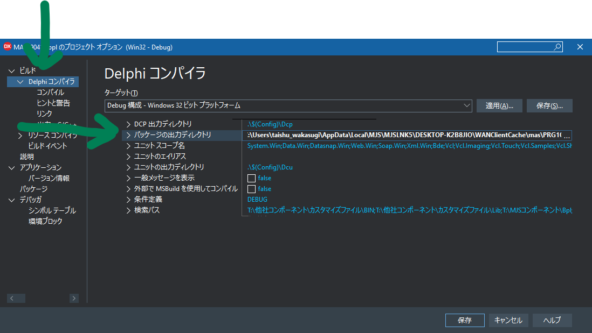

プログラムを実行後.bplファイル（パッケージ）をMJSLINKのデータの該当箇所に置き換えると実装出来ますが、Delphi側の設定でプログラムの実行と同時にパッケージの出力先を変更することで効率的に実行と同時に実装することが出来ます。
プロジェクトからオプションを押下します。

次にDelphiコンパイラでパッケージの出力ディレクトリを設定します。

出力ディレクトリは、
C:\Users\名前\AppData\Local\MJS\MJSLNK5\仮想PC名\WANClientCache\mas\PRG10\
に設定してください。
本来のプログラムのディレクトリは
C:\Program Files (x86)\MJS\MJSLNK5\MAS\PRG10
なんですが、MJSLINKは速度向上の為キャッシュ機能を使っています。その為、上記のディレクトリにする事で優先的に読み込まれる仕組みになっています。
デバッグ実行時にプログラムが一時停止した状態からプログラムを１行ずつ実行します。
実行箇所が手続（関数）を呼び出している時、
・「ステップ実行」は手続（関数）が終わった後の次の行
・「トレース実行」は手続（関数）の中の１行目
で一時停止します。